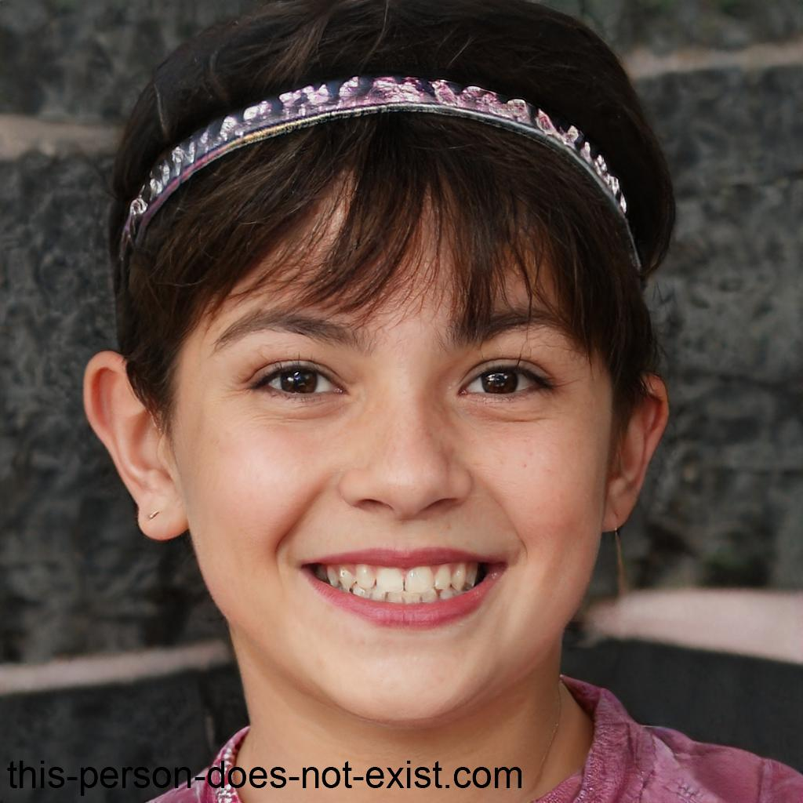

|  |
Lucero Silvia Estrada Barragan |
ContactoEmail: silvia.estrada81@example.com Fecha de Nacimiento: 14 de abril del 2005 Nacionalidad: Venezolana |
ResumenMi mayor pasión son los animales. Sueño con ser una veterinaria profesional para poder cuidar y proteger a todas las criaturas que amo. Mi dedicación y empatía me impulsan a trabajar duro cada día para hacer de este mundo un lugar mejor para ellos. |
Experiencia Profesional
2 años Trabajé en una clínica donde adquirí experiencia en el tratamiento y cuidado de mascotas, desde perros y gatos hasta pequeños roedores. Realicé consultas, vacunaciones, cirugías menores y brindé atención en casos de emergencia, desarrollando habilidades tanto en medicina preventiva como en el manejo de situaciones críticas. 1 año Como pasante en un refugio, me involucré en el cuidado y rehabilitación de animales abandonados y maltratados. Participé en la evaluación de su estado de salud, administración de tratamientos, socialización y búsqueda de familias adoptivas. Esta experiencia me permitió desarrollar sensibilidad hacia el bienestar animal y trabajar en equipo para proporcionarles una segunda oportunidad. 3 años En este centro especializado, colaboré en la atención de animales salvajes heridos o enfermos, desde aves rapaces hasta mamíferos exóticos. Participé en la realización de exámenes físicos, diagnósticos, tratamientos médicos y rehabilitación para su posterior liberación en su hábitat natural. Aprendí a trabajar en un entorno único y desafiante, donde la ética y el cuidado ambiental son fundamentales. |
Formación Educativa
|